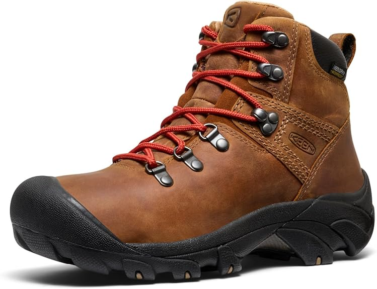

Classic European leather profile meets Targhee-inspired traction — KEEN.DRY inside.

Syrup LeatherKEEN.DRY Waterproof
Breathable membrane helps keep feet dry when trails turn damp or slushy.
Bump Toe & Leather Build
All-leather upper with KEEN’s protective toe wrap and heritage outdoor look.
Targhee-Style Traction
High-traction sole concept borrowed from the Targhee family for confident grip off pavement.
13cm
Shaft height
Mid
Cut height
Dry
KEEN.DRY
Upper
Waterproof leather
Classic paneling with padded tongue and collar; speed hooks for quick lace tension.
Lining / membrane
KEEN.DRY
Brand waterproof-breathable system to manage moisture inside the boot.
Outsole
Rubber lug outsole
Aggressive tread pattern for mixed dirt, gravel, and light trail surfaces.
Always match your foot length to the official size chart on the listing.
Shoppers highlight
Roomy forefoot, still secure
Owners often praise a comfortable width with good lace-down hold around the ankle.
Light on the foot for leather
Frequently noted: reassuring sole thickness without a clunky, heavy feel on long walks.